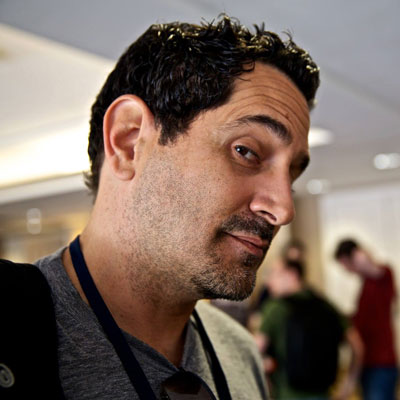

Session Details
Day 1: Thursday 19th
PWA, Native Apps, oh my! Making sense of the evolving web app landscape
We all love web code, but there is only so much you can do in the browser. Native apps allow you to do more, but trying to shoehorn web code into a native experience historically hasn't served our users well. Things are different now. As it turns out, we no longer have to compromise between a great user experience and our familiarity with HTML, CSS, and JavaScript.
In this talk, we’ll work to make sense of the evolving web app landscape. We'll cover everything from Progressive Web Apps to React Native to Electron to HWAs, and look at how you can maintain one web code base while still ensuring your apps run brilliantly both in your browser as well as natively on iOS, Android, and desktop devices.
Rey Bango, Web Developer Advocate, Microsoft
Rey Bango is a developer advocate at Microsoft focused on helping developers build awesome cross-browser experiences. He’s an ardent supporter of standards-based development and open-source development. He's taken an interest in information security, especially appsec, and wants to help build more secure experiences.
Progressive Web Apps to the Rescue
When InspireHUB was founded in 2013 it was immediately retained by the Mandela family to help use technology to fight the pediatric healthcare crisis in South Africa. In this talk, Co-Founder Karolyn Hart shares the story of how Progressive Web App technology came to the rescue for InspireHUB clients, what the team learned about using bleeding edge technology and how a small, unknown, scrappy group of devs ended up being the first to do a whole lot of cool stuff.
Karolyn Hart, Co-Founder/Chief Operating Officer, InspireHUB
When InspireHUB was founded in 2013 it was immediately retained by the Mandela family to help use technology to fight the pediatric healthcare crisis in South Africa. In this talk, Co-Founder Karolyn Hart shares the story of how Progressive Web App technology came to the rescue for InspireHUB clients, what the team learned about using bleeding edge technology and how a small, unknown, scrappy group of devs ended up being the first to do a whole lot of cool stuff.
Getting To Grips With CSS Grid
CSS grid finally brings 2D layouts to CSS, with some incredibly powerful tools for creating beautiful responsive layouts. We’ll start with the basics of Grid and then explore how to build some common layouts that you’ll see often around the web, along with some advice on what grid is not for!
We’ll take a trip through the history of web layout from tables to flex to learn the good the bad and the
ugly of coding up a design and the problems that grid can fix. We’ll then cover the basic language of Grid
and Grid composition using some responsive layouts as examples; finishing with the ‘holy grail’ layout built
in 5 lines of CSS. Grid, however, isn’t here to kill all other layout methods so it is worth mentioning that
other tools, such as flex, are still very useful and valid. We’ll then go on to cover some more advanced uses
of Grid such as template area naming and how and why we might implement a subgrid-like effect using
display:contents.

Jo Balletti, Developer Advocate, Samsung Internet
Jo is a Web Developer Advocate for Samsung Internet who is passionate about good CSS. She’s got 6 years experience as a front end developer and has worked in various parts of the tech industry from startups, agencies, charities to large organisations. She is also mentor and organiser at codebar.io where she is able to action her passion not only for teaching good use of the web but also for improving the diversity and inclusivity of the tech industry.
Web Bluetooth for Fun and Profit
The Web is moving into the physical world. Wearables, sensors, even drones... the availability of Bluetooth Low Energy in our smartphones is driving a 'connected devices' revolution. Using the Web Bluetooth API, we can start controlling the world around us, with no native code required.

Peter O'Shaughnessy, Developer Advocate, Samsung Internet
Peter is a developer advocate in Samsung's web browser team. He enjoys helping web developers to make the most of the web platform, especially up-and-coming Web APIs. In recent months he has been exploring and sharing about PWAs, Web Payments, WebVR and Web Bluetooth. He previously worked in a “future technologies” lab at an education company and as a tech lead at a national newspaper and two web development agencies.
The Hateful Weight
Web development and the technologies employed are complex. What is not a Gordian knot is image weight. Image weight is oft a red herring of poor management resulting in poor #ux, along with dissolution of users’ data plans. With the world moving from mostly to near exclusively, data sensitive mobile clients, image optimization is crucial component of asset management. Making learned decisions about images is critical, from formats to art direction. The Hateful Weight will discuss:
- Formats, new and old.
- Their strengths and short comings
- The tools and strategies to oversee their optimizations
- And the need to address a varied and worldly audience.
At the denouement, attendees will have a much better understanding and grasp of image formats, the need for their management and optimization and the urgent necessity to consider and build for new markets.
Henri Helvetica, Freelance Dev / Performance Advocate
Henri is a freelance developer who has turned his interests to a passionate mix of site performance engineering and pinches of user experience. When not reading the deluge of daily research docs and case studies, or indiscriminately auditing sites in devtools, Henri can be found contributing back to the community, co-programming meetups including the Toronto Web Performance Group or volunteering his time for lunch and learns at various bootcamps. Otherwise, he’s riding track bikes, tooling with music production software or more recently, focusing on the fastest 5k possible.
Reflections from the Developer Roadshow Journey
Sandra Persing spent 10 months on the road collaborating with global partners and local meetups, influential speakers and freshly minted contributors, to bring over 57 Developer Roadshow programs all around the world. Join us as she reflects about the early days designing the program, wins and fails along the way, and some of the best practices used today in this weird and wonderful industry called developer relations.

Sandra Persing, Global PM DevRel at Mozilla
Sandra Persing is the Global Program Manager for Creators in Tech at Mozilla, investing in DevRel Events. She's the producer of over 57 Developer Roadshows as well as 3 tentpole developer events. She currently serves on the Advisory Board for Women Who Code, and is the CoFounder of DevRelSummit. Her current passion lies in finding opportunities to bring inclusion and equity in the virtual, augmented, and mixed reality worlds. Find her at meetups, conferences, and the busiest airport terminals.
Day 2: Friday 20th
Title TBA

Alex Russell
Alex Russell (@slightlylate) is a Senior Staff Software Engineer on the Chrome team at Google where he designs new features for the Web Platform and leads Chrome's Standards work. He's a member of ECMA TC39 (the JavaScript language committee) and serves as an elected member of the W3C’s Technical Architecture Group where he works to improve the state of API design for the web. His recent projects include Progressive Web Apps, Web Components, ES6 features including Classes and Promises, and Service Workers. Previously he helped build Chrome Frame and led the Dojo Toolkit project. Alex plays for Team Web.
Game mechanics powered by the Gaze-At-Ratio (GAR)
Learn how content creators and publishers can measure a user's depth of attention and engagement to 3D objects in both VR/AR environments without disrupting the content or the user experience, and then employ that metric for various applications like A/B testing, content triggering, and monetization. One approach is powered by the Gaze-At-Ratio (GAR), an algorithm that determines the value of a user's gaze to a 3D object by factoring in the relative distance, duration, and depth of a user’s orientation as the object enters and exits their field of view.
Amir Bozorgzadeh, Co-Founder/CEO, Virtuleap
Amir Bozorgzadeh is cofounder and CEO at Virtuleap, the host of the Global WebXR Hackathon and the startup powering up the Gaze-At-Ratio (GAR) XR metric. Amir is a regular contributor to tech blogs like VentureBeat and TechCrunch on emerging tech, new media formats, gaming, and startup ecosystems.
Workshop: Creating an image viewer with WebXR
We will use A-Frame to create a nifty image viewer. Using assets from flickr, we will create an animated carousel image browser that works on phones and desktops.

Diego González-Zúñiga, Developer Advocate, Samsung Internet
A Senior Engineer at Samsung Research UK, Diego works as a Developer Advocate in the Samsung Internet team. Combining his interests in 3D in apps, GUIs, VR, creative uses of technology, and video games, he spends time wandering the VR fields in search of sense.